牛顿认识的微积分
1665年，牛顿开始考虑无穷小。他提出的问题是：假定我们知道物体在任意时间t内经过的距离是D(t)，如何得到任意时刻的速度？他提出对变速运动而言，任意时刻的瞬时速度是在该时刻的无穷小时间区间内经过的距离与时间区间的比值。引入符号o作为无穷小时间区间，牛顿定义时间t的速度为在时刻t和时刻t+o之间经过的距离与o的比值，即速度[d(t+o)-D(t)]/o。例如，如果D(t)=t3 ,那么D(t+o)=t3+3r2o+3to2+o3。由于o是无穷小，我们可能忽略正比于o2和o3的项，取D(t+0)=t3+3t2o，于是D(t+0)-D(t)=3r2o，由此得出速度是3r2。牛顿称之为D(t)的“流数”，但后人称之“导数”，它是现代微积分的基本工具。
然后牛顿研究了曲线所围成图形面积的问题。他的回答是微积分的基本定理：必须找到一个量，其流数是描述曲线的函数。例如，我们已经看到，3x2是x3的流数，因此抛物线y=3x2与x=0之间的面积就是x3.牛顿称之为“反流数术”，如今被称为“积分”。
大话微积分
求曲线的切线，依赖于纵坐标的差值与横坐标的差值，当这些差值变成无限小时之比；而求曲线下的面积，则依赖于无限小区间上的纵坐标之和（亦即宽度为无限小的矩形面积之和），并看到了这两类问题的互逆性，莱布尼茨在给洛必达的一封信中总结说：“求切线不过是求差，求积分不过是求和。
导数是无穷小之比，积分是无穷小之和；
微分学Differential Df(x)dx或f’(x)dx
1684年，一篇《一种求极大值与极小值以及求切线的新方法，它也适用于有理量与无理量，还有这种方法的奇妙微积分计算》，这是第一次正式出版的微积分著述。它的作者是戈特弗里德﹒威廉﹒莱布尼茨，这篇关于微分的论文，是微积分这门学科的两个分支之一，另外一个分支是积分，在1686年莱布尼茨在相同的期刊《教学学报》上介绍了它。
微分学的核心是斜率和切线的概念。一个是代数的概念，一个是几何的概念。
我们先从斜率开始讨论，假设在坐标平面内有一条直线，我们分别研究x坐标和y坐标，但是研究x和y是如何连带变化的通常更有益。例如，如果x增加4个单位，那么相应的y值如何变化呢？能够想到的是这个答案与问题中的直线的坡度有关，在下图中，左边的直线逐渐上升，所以坐标增加4个单位（即水平轴上增加4个单位）导致y坐标产生较小的变化（即垂直变化非常小），但是对于右边倾斜较大的直线来说，x增加4个单位则导致y产生较大的上升。
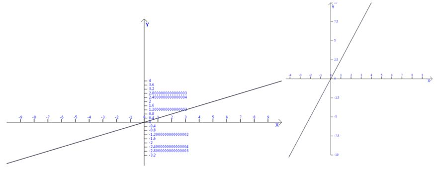
用数学的语言描述这一概念，我们定义直线的斜率为：
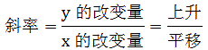
如果一条直线的斜率是2/5,那么当x增加5个单位时，y会增加2个单位，缓缓上升。但如果斜率是5/2，则表明当x增加2个单位时，y整整增加了5个单位，此时攀升速度相当快。
通过点(x1,y1)和点(x2,y2)的直线的斜率的定义：
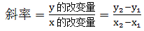
如何确定曲线的斜率呢？如y=4x2+2x+9，显然，整个抛物线没有固定的斜率，每一点的斜率都不同。如何确定点P0(2,29) 斜率呢？从图上看,在点P0画出这个抛物线的切线，切线的斜率就是抛物线的点P0处的斜率。
但如何求切线的斜率呢，因为斜率的定义需要直线上的两个点来计算，现在只有P0点而已，微分学给出了绕过这一障碍的方法，那就是间接地逼近这条切线的斜率，这是一条绝妙的进攻路线。
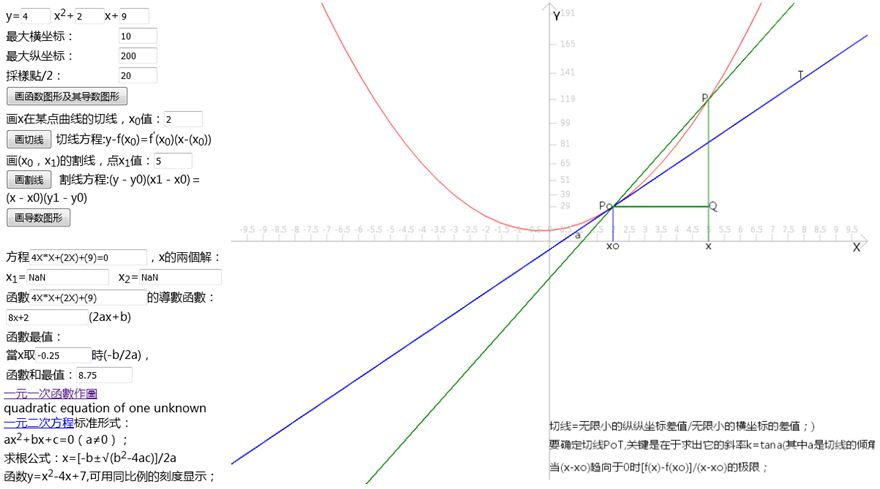
我们需要求出的是曲线在x=2处的斜率，首先我们考虑：选取靠近x=2处的一个点，先选取x=5这一个点P(5,119)，两点PP0连成了一条割线，用割线的斜率来近似点P0的切线的斜率，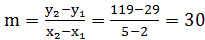,但这只是一个粗略的近似，选取的P点的x轴值x，如果｜x-2|能尽可能小，则越精确近似点P0切线的斜率。所以要考虑让点沿着抛物线逐步更加接近P0去计算抛物线上的点。（相连的割线形成的斜率。）

| 曲线4x2+2x+9 | ||||
| 斜率8x+2，当x=2时，其斜率为18 | ||||
| 点P0：（ | 2 | 29 | ） | |
| x | y | 割线斜率 | 左边有一个显然的趋势，选取点越靠近P0点，对应的割线也旋转着更加靠近这条切线。 |
|
| 5 | 119 | 30 | ||
| 4 | 81 | 26 | ||
| 3 | 51 | 22 | ||
| 2.5 | 39 | 20 | ||
| 2.1 | 30.84 | 18.4 | ||
| 2.01 | 29.1804 | 18.04 | ||
| 2.001 | 29.018 | 18.004 | ||
| 2.0001 | 29.0018 | 18.0004 | ||
| 2.00001 | 29.00018 | 18.00004 | ||
这样，需要有一个一般的方法去求ax2+bx+c上任意点P0(x0,y0)处的斜率公式：选取一个邻近点P(x,y)，x=x0+h;
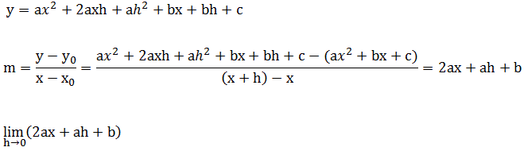
=2ax+a(0)+b=2ax+b
曲线的切线斜率是当h趋近于0时相应割线斜率的极限，这个极限称为导数，求导数的过程称为微分。
微分学的目标就是发展更一般的公式。我们肯定不想局限于处理抛物线。使用与上面的过程类似的思路，数学家从一般函数y=f(x)开始，求其上任意点（x,y）处的切线的斜率。同上，我们在这条曲线上选择一个邻近点，坐标是(x+h,f(x+h)),接下来，确定割线的斜率：
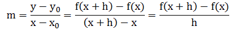
最后求当h→0时，上面这个商的极限值。
莱布尼茨把导数记为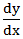。后来约瑟夫﹒路易﹒拉格朗日(1736-1813)引入更强大的记法，使用符号f’(x)表示f(x)的导数。
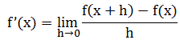
从这个一般定义开始，我们可以给出许多函数的导数，当微分x的幂函数，即求形如xn的函数的导数时，一个非常优美的模式出现了，即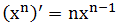。
求曲线的极大值和极小值的关键是我们前面讨论的斜率，在小山的顶部或狭谷的底部，曲线的切线是水平的，即是一条水平直线，它的斜率是0.用代数的语言表示，求函数的极值，可以转换为求函数的导数等于0的方程解。
我们可以从一个实例去充分领略微分学的风范。
意大利数学家吉罗拉莫﹒卡尔达诺（1501-1576）有一个论断：不存在两个实数（设为x,y）满足其和等于10且其积等于40；利用微分学，我们很容易证明他的结论。
f(x)=xy=x(10-x)=-x*x+10x,求其极大值。
f’(x)=-2x+10,当x=5时，f’(x)=0,xy=25,和等于10的两个实数有极大积25.
如果讨论周长为20的几何体，哪一类及相应参数设计如何达到面积最大？圆，面积可达100/pi.
导数Derivative
The limiting value of the ratio of the change in a function to the corresponding change in its independent variable.
函数值的增长与自变量的增长之比的极限，称为函数y对变量x在点x0的导数。
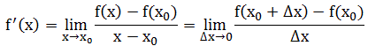
积分学Integral Calculus
微分学研究的是曲线的斜率，而积分学描述的是曲线下的面积；对于圆和梯形等不同图形的面积我们需要应用不同的公式，相对而言，积分采用更一般的视点，寻找一个统一的方法求任意函数界定的面积。
如前面微分学的思路，由割线的斜率去逼近目标点的切线的斜率，曲线下面积的求法的思路也可从矩形的面积累积：构造的矩形的高可由t的值，通过y=f(t)求得，如下图，曲线下面积≈矩形面积之和= f(t1)△t1+ f(t2)△t2+ f(t3)△t3.显然，这个面积只是粗略地近似。如何改进它呢？合适的技巧就是更多的细分：利用极限的思路，不要止于一千或一百万个矩形，让它们的数量没有限制地增加，甚至到了它们的宽度逼近0. 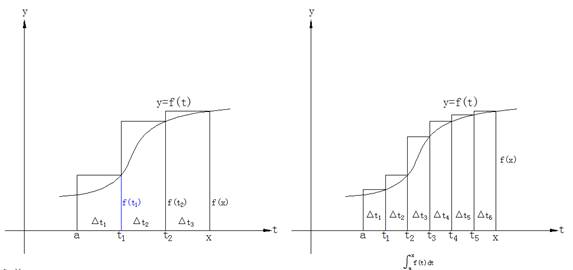
这样做以后，我们将定义曲线下的面积等于：
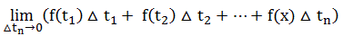
莱布尼茨引入了一个新符号，他把曲线下的面积表示成∫，是“sum”中拉长的“S”,表示矩形面积之和，从此以后y=f(t)在t=a和t=x之下的面积表示成为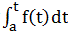，这就是积分，它是由上面的矩形面积的和的极限定义的，而且求这个积分的过程称为积分法。
我们可以考虑先从一个最简单的例子开始，求直线y=f(t)=2t下从t=0到t=1的面积，如下图所示。它的面积借助三角形的知识，可知面积是1.
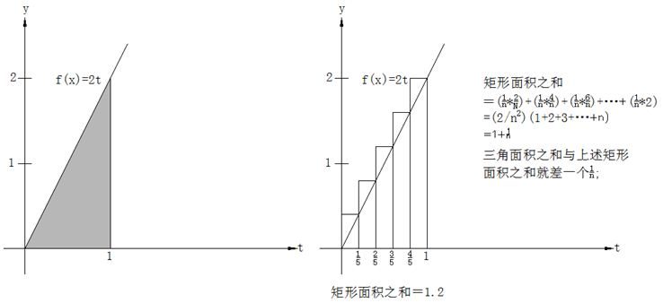
如果我们从上述微分的方法去求会怎样？首先我们考虑把从0到1的这个区间分成五个相等的子区间，它们的高分别是2/5,4/5,6/5,8/5,2,五个矩形的面积之和等于1.2；显然这种粗略的估计的面积和大大大于三角形的精确面积1,但如果我们把这个0到1的区间分成n等份，则矩形面积之和等于：

但我们要追求的是一般性的求法，莱布尼茨引入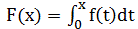来表示从t=0开始到t=x之间它下面阴影部分的面积。F实际上是x的函数，因为当x向右边移动时，F(x)或者说在0和x之间曲线下的阴影面积也随着变化。函数F就是一个“面积累加器”函数，它的值依赖于x被向右边放置多远。
数学家的目标就是要寻求关于F的某类公式，这样使得我们只需把x代入到F里就可以确定这个面积。
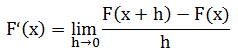
根据F的定义，我们知道F(x+h)是由曲线y=f(t)在t=0到t=x+h之间所围成的面积。因此F(x+h)-F(x)是它们的面积之差。
我们连接(x,f(x))和(x+h,f(x+h))两点，使用梯形面积近似求得不规则带的面积：1/2h[(f(x)+f(x+h))]，F(x+h)-F(x)=不规则带的面积≈梯形面积=1/2h[f(x)+f(x+h)]
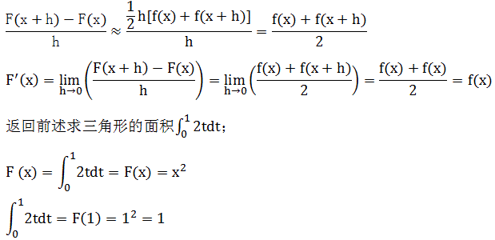
变上限积分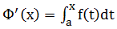在[a,b]上可导，且其导数Φ’(x)=f(x).变上限积分的导数等于被积函数在上限处的值，从几何上看，当f(t) ≥0(∨t∈[a,b])时，△Φ表示x轴上以[x,x+△x]( △x>0)为底，以y=f(x)为曲边的窄条曲边梯形的面积，它除以底的长度△x显示近似于在x点的高度f(x),当△x→0时，这个近似值就成为精确值。
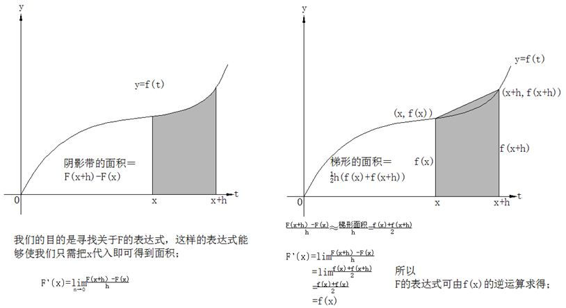
定积分就是微分f(x)dx的累计，累计的范围是从a到b,记为，也就是说作为整体性质的定积分是由作为反映局部性质的微分所组成的。
微分：函数增量相对于自变量在某一点的增量的近似求法。函数在某一点的微分就是函数在该点的增量的线性主部。
微分的概念是在解决直与曲的矛盾中产生的，在微小局部可以用直线去挖替代曲线，它的直接应用就是函数的线性化。微分具有双重意义：它表示一个微小的量，同时又表示一种与求导密切相关的运算。
微分的思路就是一个线性近似的观念，利用几何的语言就是在函数曲线的局部，用直线代替曲线，则线性函数总是比较容易计算的，因此就可以把线性函数的数值计算结果作为本来函数的数值近似的值，这就是利用微分方法进行近似计算的基本思想。
函数与其导数是两个不同的函数，而导数只是反映函数在一点的局部特征，如果要了解函数在其定义域上的整体特征，就需要在导数和函数之间建立起联系。微分中值定理（包括罗尔定理、拉格朗日中值定理和柯西定理、泰勒定理）是沟通导数值与函数值的桥梁，是利用导数的局部性质去推断函数整体性质的工具。
利用中值定理通过导数去研究函数的形态，如判断函数的上升、下降、极限值、凹形、凸形和拐点等重要形态，从而把握住函数图像的各种几何特性。
中值定理刻画了函数在区间上的增量与函数在敬意内的某一点的导数的关系。
在数学中，微分是对函数在局部变化率的一种线性描述，微分可以近似地描述当函数自变量的取值作足够小的改变时，函数的值是怎样改变的。
不定积分的概念是为了解决求导和微分的逆运算而提出的。
定积分的概念的产生来源于计算平面上曲边形的面积，解决的基本思路是用有限代替无限。
牛顿研究微积分着重从运动学来考虑，莱布尼茨却是侧重于几何学来考虑的，牛顿在1671年写了《流数法和无穷级数》，这本书直到1736年才出版。
欧氏几何也好，上太和中世纪的代数学也好，都是一种常量数学，微积分才是真正的变量数学：研究函数，从量的方面研究事物运动变化是微积分的基本方法，这种方法叫做数学分析，现在已同微积分等同起来。
微积分的产生一般分为三个阶段：
1 极限概念；
2 求积的无限小方法；
3 积分与微分的互逆关系（由牛顿和莱布尼兹完成的）。
函数单调敬意的分界点：
1 其一价函数等于0的点；
2 其一阶导数不存在的点；
导数的定义是差商的极限，作为它的对偶情形，考虑乘积之和就引入了定积分。
连续函数的定积分之值等于它的任意一个原函数在积分区间上的改变量，即牛顿-莱布尼茨公式，它建立起连续函数的定积分与其原函数之间的一种关系，它提示了定积分与不定积分之间的内在联系，也为积分计算找到了一条捷径。
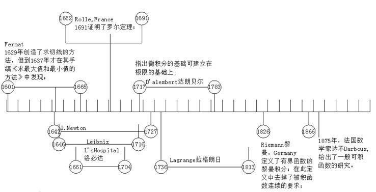
导数就是关于函数对于自变量的变化率，从几何上看，变化率就是函数f(x)图像上x处的切线斜率。它可以通过求割线的斜率来逼近。
微积分就是关于瞬时变化率的数学。是指某个特定的量在瞬时变化得有多快。积分则相反，在给定某个量的变化率，通过积分则得到这个量本身。
代数方程与一个未知数的各次幂有关。微分方程则更高级，与一个未知函数的各阶导数有关。牛顿的伟大发现在于，自然规律并不是通过某些量的规律性，而是通过它们的导数之间的关系来呈现。自然法则则用微积分的语言来记录；重要的不是物理量的值，而是它们的变化率。这是很深刻的发现，它引发了一场革命，或多或少的导致了现代科学的诞生。
Today, calculus has widespread uses in science, engineering and economics and can solve many problems that algebra alone cannot.
Applications of differential calculus include computations involving velocity and acceleration, the slope of a curve, and optimization. Applications of integral calculus include computations involving area, volume, arc length, center of mass, work, and pressure. More advanced applications include power series and Fourier series.
The most common symbol for a derivative is an apostrophe-like mark called prime. Thus, the derivative of the function of f is f′, pronounced "f prime." For instance, if f(x) = x2 is the squaring function, then f′(x) = 2x is its derivative, the doubling function.
If the input of the function represents time, then the derivative represents change with respect to time. For example, if f is a function that takes a time as input and gives the position of a ball at that time as output, then the derivative of f is how the position is changing in time, that is, it is the velocity of the ball.
If a function is linear (that is, if the graph of the function is a straight line), then the function can be written as y = mx + b, where x is the independent variable, y is the dependent variable, b is the y-intercept, and:
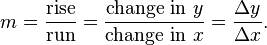This gives an exact value for the slope of a straight line. If the graph of the function is not a straight line, however, then the change in y divided by the change in x varies. Derivatives give an exact meaning to the notion of change in output with respect to change in input. To be concrete, let f be a function, and fix a point a in the domain of f. (a, f(a)) is a point on the graph of the function. If h is a number close to zero, then a + h is a number close to a. Therefore, (a + h, f(a + h)) is close to (a, f(a)). The slope between these two points is
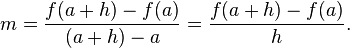This expression is called a difference quotient. A line through two points on a curve is called a secant line, so m is the slope of the secant line between (a, f(a)) and (a + h, f(a + h)). The secant line is only an approximation to the behavior of the function at the point a because it does not account for what happens between a and a + h. It is not possible to discover the behavior at a by setting h to zero because this would require dividing by zero, which is undefined. The derivative is defined by taking the limit as h tends to zero, meaning that it considers the behavior of f for all small values of h and extracts a consistent value for the case when h equals zero:
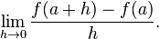Geometrically, the derivative is the slope of the tangent line to the graph of f at a. The tangent line is a limit of secant lines just as the derivative is a limit of difference quotients. For this reason, the derivative is sometimes called the slope of the function f.
Here is a particular example, the derivative of the squaring function at the input 3. Let f(x) = x2 be the squaring function.
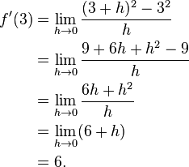. Leibniz, however, did intend it to represent the quotient of two infinitesimally small numbers, dy being the infinitesimally small change in y caused by an infinitesimally small change dx applied to x.
The indefinite integral is the antiderivative, the inverse operation to the derivative. F is an indefinite integral of f when f is a derivative of F. (This use of lower- and upper-case letters for a function and its indefinite integral is common in calculus.)
The definite integral inputs a function and outputs a number, which gives the algebraic sum of areas between the graph of the input and the x-axis. The technical definition of the definite integral involves the limit of a sum of areas of rectangles, called a Riemann sum.
A motivating example is the distances traveled in a given time.
Distance = Speed * Time
If the speed is constant, only multiplication is needed, but if the speed changes, a more powerful method of finding the distance is necessary. One such method is to approximate the distance traveled by breaking up the time into many short intervals of time, then multiplying the time elapsed in each interval by one of the speeds in that interval, and then taking the sum (a Riemann sum) of the approximate distance traveled in each interval. The basic idea is that if only a short time elapses, then the speed will stay more or less the same. However, a Riemann sum only gives an approximation of the distance traveled. We must take the limit of all such Riemann sums to find the exact distance traveled.
When velocity is constant, the total distance traveled over the given time interval can be computed by multiplying velocity and time. For example, travelling a steady 50 mph for 3 hours results in a total distance of 150 miles. In the diagram on the left, when constant velocity and time are graphed, these two values form a rectangle with height equal to the velocity and width equal to the time elapsed. Therefore, the product of velocity and time also calculates the rectangular area under the (constant) velocity curve. This connection between the area under a curve and distance traveled can be extended to any irregularly shaped region exhibiting a fluctuating velocity over a given time period. If f(x) in the diagram on the right represents speed as it varies over time, the distance traveled (between the times represented by a and b) is the area of the shaded region s.
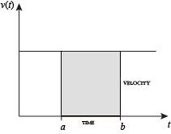 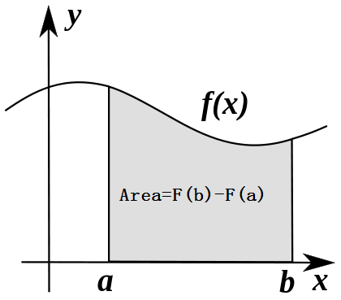To approximate that area, an intuitive method would be to divide up the distance between a and b into a number of equal segments, the length of each segment represented by the symbol Δx. For each small segment, we can choose one value of the function f(x). Call that value h. Then the area of the rectangle with base Δx and height h gives the distance (time Δx multiplied by speed h) traveled in that segment. Associated with each segment is the average value of the function above it, f(x) = h. The sum of all such rectangles gives an approximation of the area between the axis and the curve, which is an approximation of the total distance traveled. A smaller value for Δx will give more rectangles and in most cases a better approximation, but for an exact answer we need to take a limit as Δx approaches zero. The symbol of integration is "S", an elongated S (the S stands for "sum"). The definite integral is written as:
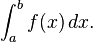and is read "the integral from a to b of f-of-x with respect to x."
The indefinite integral, or antiderivative, is written:
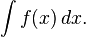Functions differing by only a constant have the same derivative, and it can be shown that the antiderivative of a given function is actually a family of functions differing only by a constant. Since the derivative of the function y = x2 + C, where C is any constant, is y′ = 2x, the antiderivative of the latter given by:
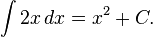The unspecified constant C present in the indefinite integral or antiderivative is known as the constant of integration.
The fundamental theorem of calculus states: If a function f is continuous on the interval [a, b] and if F is a function whose derivative is f on the interval (a, b), then
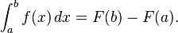Furthermore, for every x in the interval (a, b),
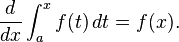